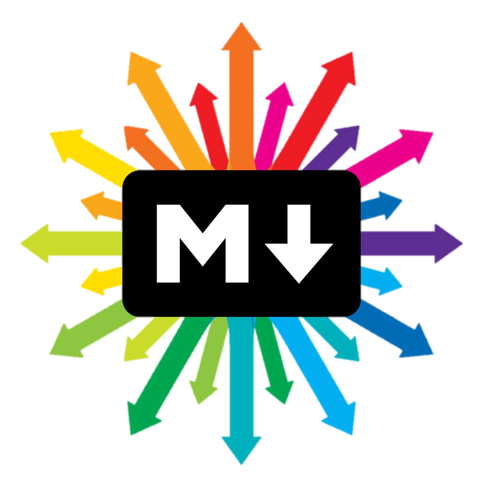
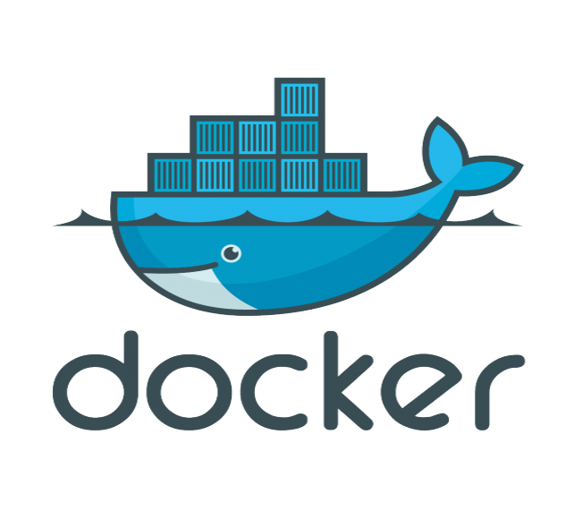
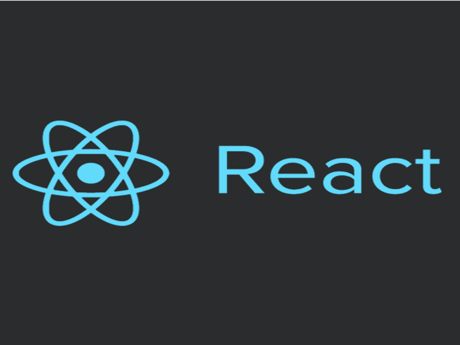
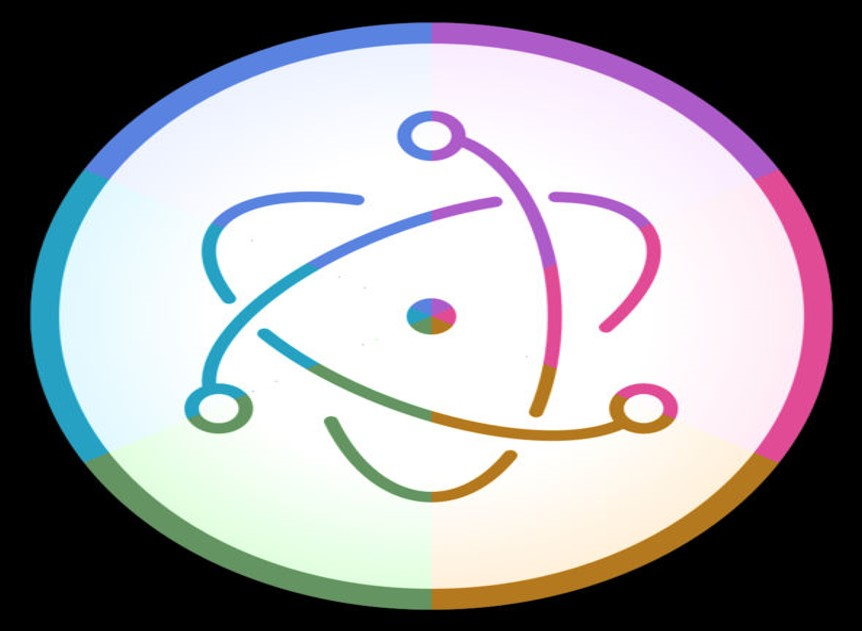
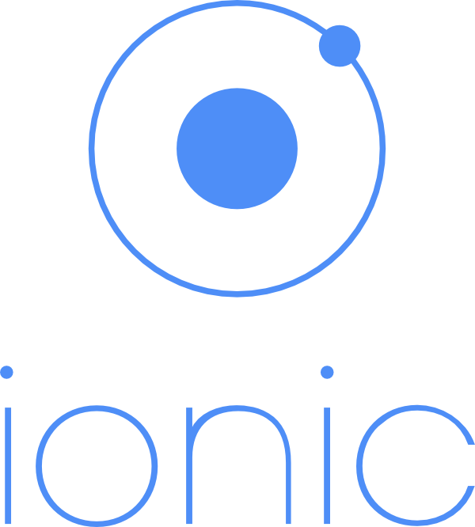
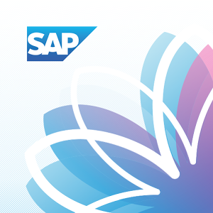

Come and Code
SAP ♥ He Qin
2016 July
What is it?
Benefits
Process
Sample Topics
Technique Sharing Lecture
More than listening
Topics are new, funny, inspiring
Provide on-lecture exercises
Audience
Feed Curiosity & Imagination
Get inspiration for daily work
Keep up with new techs & trends
Code with fun. Try to hack.
Learn new tricks. Be more efficient.
Presenter
Place to Share
Speaking Skills
Organization and elaboration
Stimulate technical learnings
To teach is the best way to learn
Preparation before lecture
Environment setup
Pre-reading
Lecture
Background and History
What are the advantages?
Comparison with Similar Tools
What it can do? What it cannot?
Introduction to basic knowledges
Interactive Coding
Speaker take audience to complete a demo
The demo should be interesting, precise and not hard
Conclusion
What have been done in the demo?
Where can we use this magic?
Further Resources
Q & A
A work-boosting tool
A time-saving framework
A novel, practical design trend
Tools
  
Docker
Markdown Notes
Impress.js
React.js
UI5 TodoMVC
Chrome extension
Framework
 
Electron
Ionic
Android
ELK
Automatic Test/Deploy Framework
Design Trend

Processing.js
SAP Fiori
Flat UI
Google Material Design